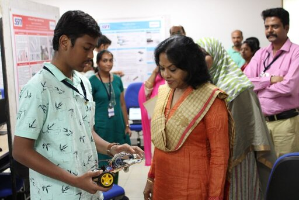

The SHAPE Internship Programme is a highly prestigious initiative organised by SSN College Of Engineering that attracts top students from across India. Each participating school is allowed to send only their two best students, and typically, only about ten schools are selected. Students are assigned to various departments, and I had the opportunity to work in the Mechanical Engineering department.
HutchBot is a human following robot built using Arduino. It uses ultrasonic sensors to detect the distance between the robot and the human. The robot follows the human by adjusting its speed and direction based on the distance.
Source Code